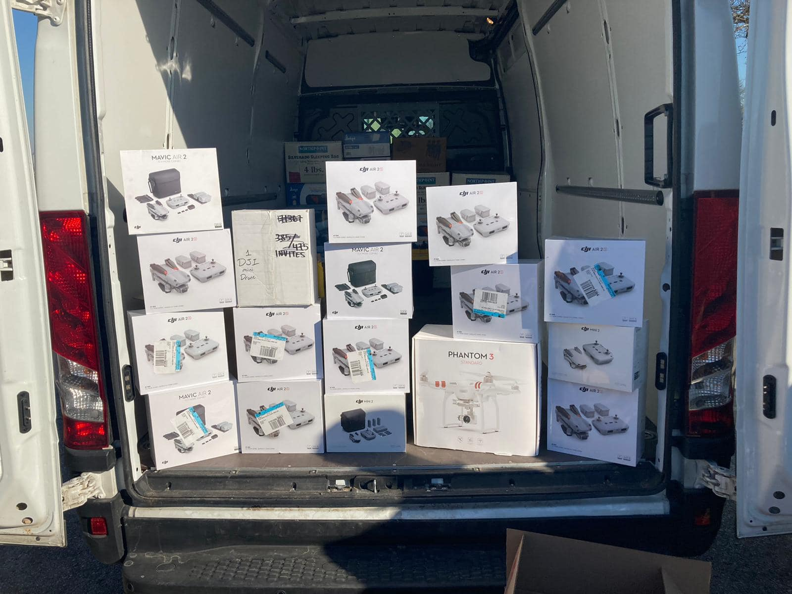

How to Help
IMPORTANT! WE HAVE AN ONGOING DONATION DRIVE FOR UKRAINE.
The deadline for donations has been extended to April 1. We truly appreciate the overwhelming interest from individuals,
organizations and businesses in the community. While some of our drop-off locations are already full, we are regularly
updating the list below with new locations.
Many of you ask about the difference between the LHM initiative and the UUA donation drive. The items gathered through LHM
will go to help Ukrainian refugees. The donations UUA gather will be distributed inside Ukraine, to volunteer defense force
and civilians in need. There is a dire need in both areas, and we appreciate your assitance with either one.
We are asking for donations in the following areas. Please note that the weather is getting warmer in Ukraine now and
previously needed items for very cold weather are no longer requested. Please keep that in mind if buying any clothing items.
Life-Saving Supplies for Territorial Defense Force in Ukraine (Civilian Volunteers)
Military first aid kits
Sleeping bags
Sleeping mats
Survival blankets / thermal blankets
Thermal imaging goggles / thermal imagers / night vision devices
Portable power banks (preferably solar)
Professional digital radios / 2-way radios
DJI Air 2S drones
Emergency Relief for Civilian Population in Ukraine
Feminine hygiene products (small packs to distribute to more people)
Diapers
Infant formula
Toothpaste
Brand new underwear (all sizes)
Brand new T-shirts (M, XL)
Brand new socks
Easy to open canned foods and other nonperishable foods
(Soups, tuna, instant noodles etc. Please avoid items that require a can opener)
Crackers
Energy bars
For drop-off locations, please contact:
Draper, Riverton, South Jordan: Ivan (801) 808-9476
Salt Lake City: Sergei (801) 949-0278
Provo: Vasil (801) 472-7654
Orem: Kaitlyn (507) 201-5290
Taylorsville: Yevgen (201) 515-4032 or Tatyana (516) 262-0276
We apologize if you are not able to get a hold of someone on your first try. Please send a text or try calling again.
Our volunteers are processing a large amount of calls and we appreciate your patience. If you are not able to reach someone
in your area, please contact Ivan at (801) 808-9476. He oversees all locations and will make sure you are connected with someone.
Petition for Refugees

Dear Utahns, we need your help collecting 100,000 signatures for
this petition.
The migration of Ukrainian refugees has prompted swift international and regional responses,
but such momentum is unlikely to sustain itself. Some world entities are already calling the refugee situation
a ‘humanitarian crisis.’
We ask that the U.S. government waive U.S. visa requirements and/or grant refugee status to the Ukrainian nationals.
The U.S. government and its constituents can save and shape many Ukrainian lives, which are now being abruptly
and senselessly destroyed due to the unprovoked invasion of their country. Every day matters, so please act now!
Additional Ways to Help

By Jonathan Freedman, the honorary consul of Ukraine for Utah
Dear Members of the Ukrainian Community in Utah!
The Embassy of Ukraine in the United States receives numerous requests about possible ways to
provide financial support to the Ukrainian army and volunteers, protecting their country against
the aggression.
Here are the contacts of trusted organizations:
Come back alive – works
directly with the
command and personnel of military units, purchasing infrared thermal imaging cameras,
night
vision goggles, hemostatics etc.
Army SOS - manages purchases of
necessary
ammunition, shields, intercommunication and reconnaissance facilities, etc. and delivers
all
goods directly
Hospitallers
- works
directly on the frontline
Phoenix Wings - the appropriate
equipment & uniform, personal non-lethal protection (vests, helmets), required treatment
of the
wounded soldiers, and repair of the buildings used by the army
Ukrainian Women Veteran
Movement - a
consolidation of female veterans, amongst other things organizes preparation for actions
in case
of emergencies and defense situations
Vostok SOS - raising funds for
various
needs of the army
Community Wellness

The Refugee and Immigrant Center run by the Asian Association has a long history of quality behavioral health services
for the International community in Utah. Individual therapy, medication management and other services are available for
individuals in the Utah Ukrainian community, including those who do not have insurance. These services are available
for those experiencing increased stress, depression, worry, having difficulty sleeping or other related problems
due to the war in Ukraine. These services are also available for those who may be here visiting family or friends
and cannot now return home. Services are available in person and via telehealth. If services are needed in a language
other than English, professional interpreters will be provided. Call 801-467-6060 or go to
http://aau-slc.org/
or 155 South 300 West, Ste. 101, Salt Lake City, Utah, 84101 to set up services today.
St. Patrick's Day Gift

Utah Ukrainian Association expresses sincere gratitude
to our dear friends at Utah's Hibernian Society.
On St. Patrick's Day they have donated $3,017 to UUA toward its efforts of sending aid to Ukraine.
They also encouraged others to share in this act of kindness in the spirit of St. Patrick
and make a donation to the association. 100% of the funds will go toward relief efforts from the war in Ukraine.
Watch this page in the upcoming days as we will start sharing additional reports about donations.
We will also track the supplies every step of the way as they head to Ukraine and will share those updates with you.
THANK YOU to our Irish brothers and sisters for your generosity and kindness!
Please check out these articles by ABC4 Utah
and Fox 13 to find out more.
Frequently Asked Questions
What is the most effective way to help with the war efforts right now?
Please call your representatives and write to them, asking to provide additional fighter jets and air defense systems to Ukraine.
In addition, ask them to allow Ukrainian refugees to come to the U.S.
UUA is also accepting donations and sending supplies to Ukraine. Financial donations are most helpful as they allow us
to purchase items that may not be easily available or most weather appropriate given the shipment date.
What will my donation go to?
100% of your donations go to supplies for territorial defense forces protecting civilians in Ukraine,
to civilian populations in the most heavily bombed cities, and to internally displaced persons in Ukraine who escaped the bombings.
How do I know my donations will arrive in Ukraine successfully?
UUA has been regularly shipping humanitarian supplies to Ukraine since 2015. We have already delivered a shipment successfully
since the start of the war and are finalizing the second shipment. We work with established organizations on the ground
in Europe and Ukraine to make sure your donations reach the areas with the most dire need. We provide photo reports of each step of the process.
I am a Ukrainian already in Utah but don't have a permanent residency or citizenship. What are my options?
You may qualify for Temporary Protected Status (TPS) or Extension of Stay. Please reach out via our Facebook page,
and we will connect you with an attorney.
Can my Ukrainian loved ones come to Utah as refugees?
This is not yet possible. We are petitioning the local government to start receiving Ukrainians in Utah.
Please add your name to support
this petition.
I would like to host Ukrainian refugees. Where do I start?
While Ukrainian refugees cannot yet arrive here, please fill out
this form
and we will connect you with families who applied for TPS or Extended Stay. Please also add your name to
this petition
asking the Utah government to start receiving Ukrainian refugees.
Where can I buy a Ukrainian flag in Utah?
We recommend Colonial Flag, 9390 S 300 W, Sandy, UT 84070. They have generously supported UUA with a donation, put up Ukrainian flags by their store,
and lit up their building in blue and yellow at night. Please support them back!
I want to go fight for Ukraine. How do I go about it?
We do not recommend it for anyone without prior military experience. If you have military training and experience,
and are able and willing to fight for Ukraine, this
Military Times article
outlines the process.
I want to volunteer my time and skills. How can I help?
Please reach out via our Facebook page, and mention specific skills you would like to offer and your availability.
We'll get back with you.
How else can I help?
Please attend our events and help spread the word. We need to keep as much focus on Ukraine as possible,
and keep consistent pressure on the governments of the world to help stop this senseless war.
$10,000 in Aid Sent To Ukraine

We thank Utah for your generous donations on Feb. 26-27.
On a very short notice, in a few hours, you responded to our call for help and ensured quick action
during this humanitarian crisis.
Our volunteers were able to collect donations, purchase and pack supplies, and ship them with
support of the government.
Ukrainians are very grateful for your help in this complicated for their nation time.
Invoice total:
- Air Drones: 8
- Walkie Talkies: 6x2
- Military Aid Kits: 57
- First Aid Kits: 105+
- Survival Blankets: 10
- Sleeping Bags: 20+
- Water Fill Filtration Systems: 10
- Pain Relief: 200+ packs
- Cold Therapy: 100+ packs
- Wound care/Bleed Stop/Triple Antibiotic/Rolled Gauze: 800+
- Other medical supplies